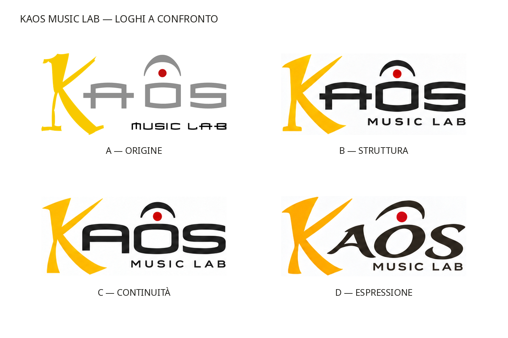
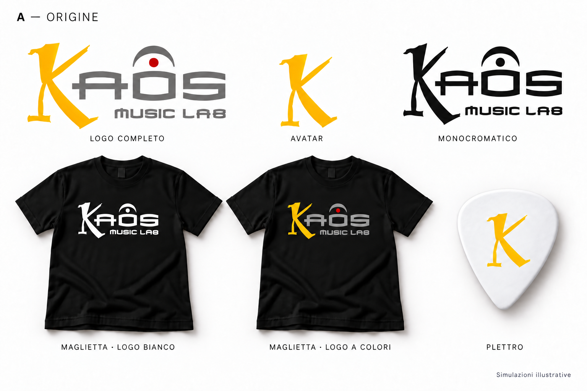
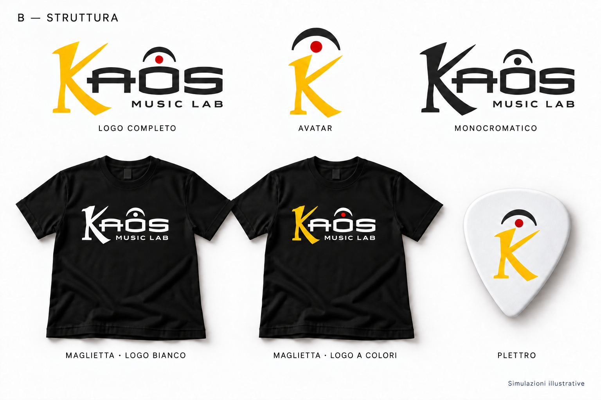
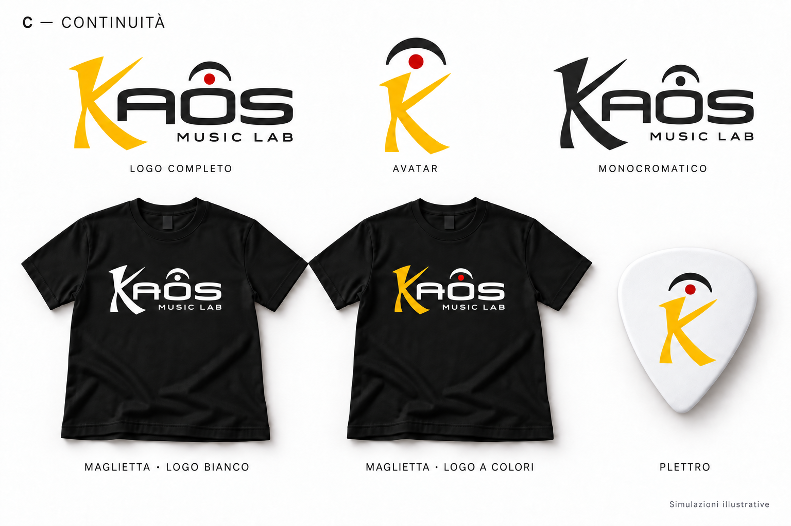
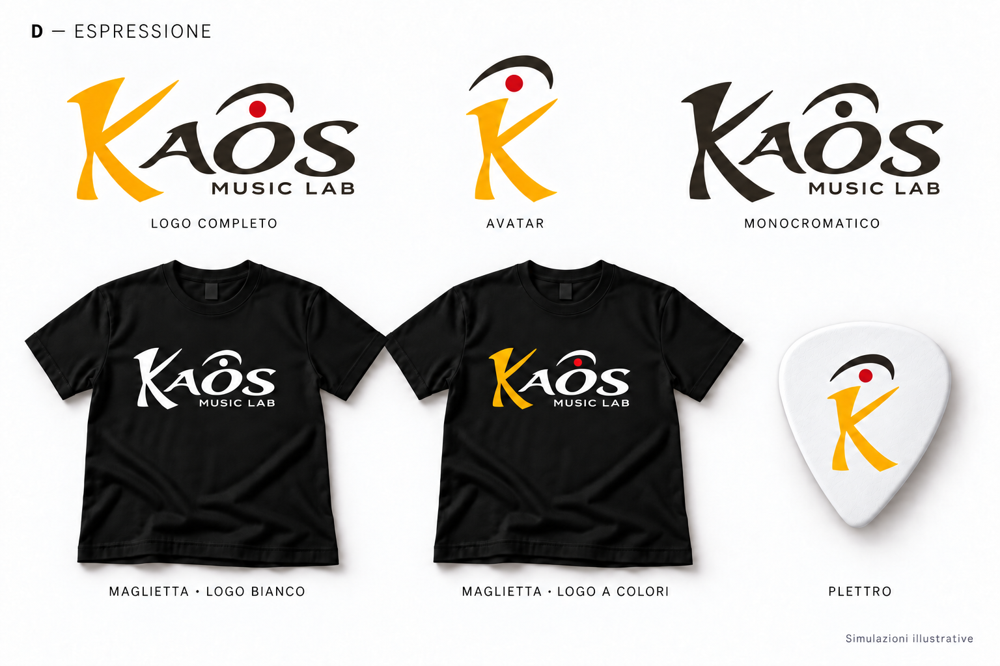
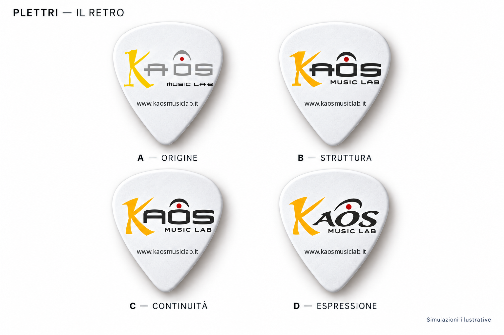

I quattro loghi principali
Scarica confronto PNG ↗{kind=link}

A — Origine
Scarica tavola PNG ↗{kind=link}
Il logo storico di Kaos Music Lab: la K gialla, le lettere estese e il punto coronato raccontano l’identità da cui nasce il progetto. È il riferimento per valutare quanto ciascuna proposta conserva e rinnova.

B — Struttura
Scarica tavola PNG ↗{kind=link}
Forme nette e un ritmo geometrico deciso. La K dialoga con lettere compatte e con la traversa sporgente della A, dando al marchio un carattere solido e ordinato.

C — Continuità
Scarica tavola PNG ↗{kind=link}
Un aggiornamento nel segno della riconoscibilità. Le lettere arrotondate e le forme semplificate accompagnano la K e il punto coronato, mantenendo un legame evidente con l’identità di Kaos.

D — Espressione
Scarica tavola PNG ↗{kind=link}
Un lettering calligrafico che riprende il movimento della K. Le lettere AOS e l’arco ovale condividono un andamento fluido, per un’identità che richiama il gesto e l’interpretazione musicale.

Plettri — Il retro
Scarica tavola PNG ↗{kind=link}
Logo completo a colori e www.kaosmusiclab.it sul retro di ciascun plettro.
